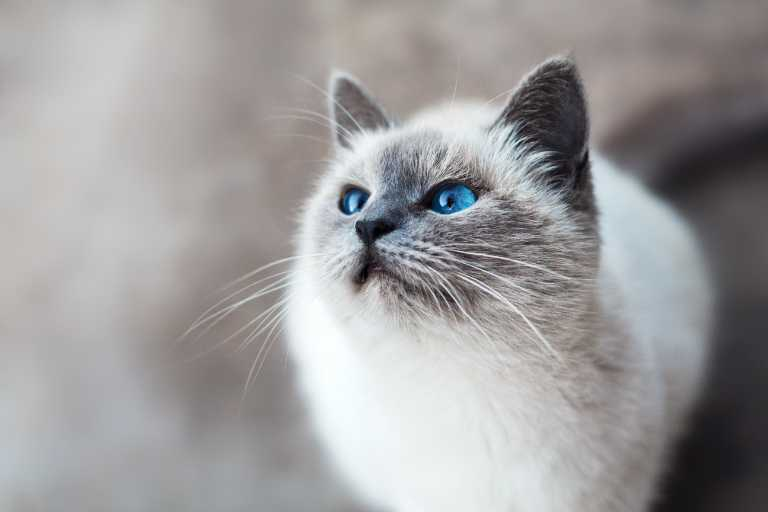
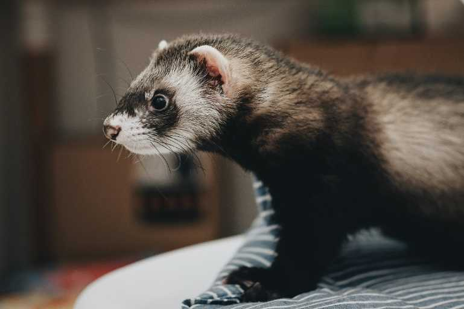

|
Sandy Sandy, a charming Bolognese dog, is seen running happily through a vibrant field of green grass, her fluffy white coat bouncing with joy as she dashes towards the camera. Her eyes sparkle with excitement, and her playful nature shines through with every eager step. Sandy’s energy and sweet personality make her the perfect companion for an active and loving home. She’s ready to bring joy, love, and loyalty to her new family—just waiting for the right person to welcome her with open arms. Could Sandy be the furry friend you’ve been looking for? |
|
Lucy Lucy is an adorable white cat with charming gray markings around her face that beautifully frame her striking blue eyes. Her captivating gaze is both playful and serene, drawing you in with a sense of curiosity and warmth. Her soft, fluffy coat gleams in the sunlight, giving her an ethereal look that captures the hearts of everyone she meets. Lucy's playful spirit shines through as she explores her surroundings, chasing after shadows and pouncing on imaginary prey. She adores cuddling and often curls up in your lap, purring softly as she basks in your affection. With her gentle demeanor and sweet personality, Lucy is sure to bring joy and warmth to any home. |
|  |
Kiwi This inquisitive ferret, aptly named Kiwi, is a delightful blend of dark fur and striking facial markings, featuring a captivating white and black face that draws you in. Standing proudly on a cozy bed, Kiwi gazes to the left with bright, curious eyes, embodying the spirit of adventure and exploration. His sleek, dark body contrasts beautifully with the soft textures around him, showcasing his playful and lively personality. Whether he’s on the hunt for hidden treasures or simply observing his surroundings, Kiwi is always ready for fun and mischief. With his curious demeanor and irresistible charm, he’s sure to bring a smile to anyone's face! |